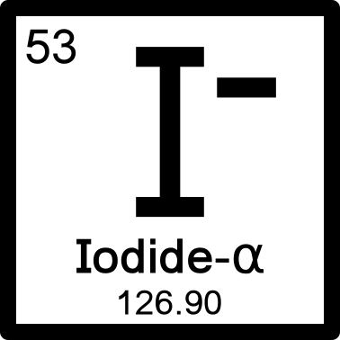
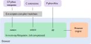

class: center, middle # Pyodide: scientific Python compiled in WebAssembly, and applications Roman Yurchak <div style="height:100px"></div> .pull-left[ *PyData Paris* *<span style="white-space: nowrap">12 November 2018</span>* ] .pull-right[ @RomanYurchak ] --- # Agenda <div style='height: 100px;'> </div> .small[ 1. Iodide: interactive programming environment for the browser 2. Pyodide: scientific Python stack compiled in WebAssembly 3. Applications ] --- # Iodide <div class='left-column' style='width: 60%;'> An interactive programming environment for scientists in the browser <br /> <br /> <a src='https://iodide.io/' style='color: blue;'> iodide.io </a> </div> <div class='right-column' style='width: 25%; margin-left: 15%;'>  </div> .reset-column[ ] Examples <div class="iodide-examples" style='width: 100%;'> <div style='float: left; width: 29%;'> <a href="https://iodide.io/iodide-examples/lorenz-attractor-pres.html"> <div> <img src="https://media.giphy.com/media/ftdkB78fuQ1Eb3J2o1/giphy.gif" width="250" height="250"> </div> Lorenz Attractor </a> </div> <div style='float: left; width: 29%'> <a href="https://iodide.io/iodide-examples/world-happiness-report-2018.html"> <div> <img src="https://media.giphy.com/media/i4rRuA3cksj8a9R58g/giphy.gif" width="250" height="250"> </div> World Happiness Report </a> </div> <div style='float: left; width: 29%;'> <a href="https://iodide.io/iodide-examples/eviction-notices-sf.html"> <div> <img src="https://media.giphy.com/media/MohSU55IoyGmAXgEkY/giphy.gif" width="250" height="250"> </div> Eviction Notices in SF </a> </div> </div> --- # Architecture <img src='./img/iodide_architecture_part0.svg' style='width: 100%;'/> <p style='height: 100px'></p> .credits[ Adapted from: <span style="white-space: nowrap">jupyter.readthedocs.io/en/latest/architecture/how_jupyter_ipython_work.html#notebooks</span> ] --- # Architecture <img src='./img/iodide_architecture.svg' style='width: 100%;'/> <p style='height: 100px'></p> .credits[ Adapted from: <span style="white-space: nowrap">jupyter.readthedocs.io/en/latest/architecture/how_jupyter_ipython_work.html#notebooks</span> ] --- # Sharing of notebooks .left-column[ ### Jupyter like model **Local** Install conda, Jupyter, then project-specific dependencies **Remote** Deploy in a container (binder etc.) ] -- .right-column[ ### Iodide model **Local** Deploy to a static webserver <span style="white-space: nowrap">Just open it in your browser</span> **Remote** Share a single file containing data, report, code and dependencies Just open it in your browser ] --- # Pyodide .slide-items[ .left-column[ <p style='margin: 5px 0;'>Python scientific stack, compiled to WebAssembly</p> .small[ - created by Michael Droettboom - language plugin for Iodide ] <p style='margin: 5px 0'>Upstream CPython</p> .small[ - numpy, pandas, matplotlib ] <p style='margin: 5px 0'>WebAssembly</p> .small[ - A fast way to run compiled code in the browser ] <p style='margin: 5px 0'>Related projects</p> .small[ - pypyjs, brython ] ] .right-column[ <img src='./img/pyodide_logos.svg' /> ] ] --- # Supported packages <img src='./img/pyodide_packages_part0.svg' style='width: 90%;'/> --- # Supported packages --- # Supported packages --- <h1 style='margin-bottom: 2px;'> Performance </h1> <p style='margin: 5px 0;'> </p> .small[ <p style='margin: 0;'> Firefox: 4-8 slower for pure Python, 1-2 times slower for C-ext. Ideal scaling with the number of users. </p> ] .credits[ github.com/iodide-project/pyodide/tree/master/benchmark ] --- # Build process  <div style='height: 30px'> </div> <div class='right-column small' style='width: 50%; '> kripken.github.io/emscripten-site/ </div> <div class='right-column' style='width: 40%; margin-left: 10%; '> <img src='./img/Emscripten_logo_full.png' style='width: 60%;'/> </div> --- # System calls For example, - ↓ `os.open` in Python - ↓ CPython: call `os_open_impl` C function -- .left-column[ **Linux** - ↓ `open` system call to `glibc` - ↓ Linux kernel ] -- .right-column[ **Emscripten / WebAssembly** - ↓ Emscripten - ↓ system call to `musl` libc - ↓ WebAssembly engine ] --- # System calls (sometimes) For example, - ↓ `os.statvfs` in Python (disk space usage) - ↓ CPython: call `os_statvfs_impl` C function .left-column[ **Linux** - ↓ `statvfs` system call to `glibc` - ↓ Linux kernel ] .right-column[ **Emscripten / WebAssembly** - ↓ Emscripten : not implemented; return "safe and sane values" - ✗ system call to `musl` libc - ✗ WebAssembly engine ] Most system calls work, but there are some edge cases. --- # What doesn't work **Difficult** - network sockets - multiprocessing - host filesystem access **Should work someday** - threads - async --- # Testing <div class='left-column' style='width: 70%;'> <p> Pytest is supported: test collection and execution in the browser </p> </div> <div class='right-column' style='width: 13%; '> <img src='img/pytest_logo.png' style='width: 100%' /> </div> -- .reset-column[ **Test suites** - CPython: 380 test files / 497 pass (increasing, but some will never pass due to WebAssembly environment) - numpy: 3145 passed, 42 failed (+ some collection failures), 47 skipped - scikit-learn: WIP, looks promising. Some remaining issues with Fortran / LAPACK calls in scipy. ] --- # Planned language interoperability --- # Pyodide demo [iodide.io/iodide-examples/python.html](https://iodide.io/iodide-examples/python.html) [iodide.io/pyodide-demo/matplotlib-sideload.html?sideload=https://matplotlib.org/examples/animation/rain.py](https://iodide.io/pyodide-demo/matplotlib-sideload.html?sideload=https://matplotlib.org/examples/animation/rain.py) --- # Contributors welcome Open source on Github, [github.com/iodide-project/pyodide](http://github.com/iodide-project/pyodide) [github.com/iodide-project/iodide](http://github.com/iodide-project/iodide) Looking for, - Experimenters - Designers - Programmers - Writers - Bug hunters .left-column[ <p>.</p> ] .right-column[ ] --- class: center, middle ## Application: in-browser data analytics using Iodide and OfficeJS Jean-Paul Smets .pull-right[ <img src='./img/NXD-Official.Logo.png' style='width: 80%;'/> ] --- # Iodide included in the OfficeJS App Store .left-column[ - online and offline use - synchronization with Dropbox, WebDAV, ERP5 possible with JIO library - can be embedded into any business application ] <div class='right-column' style='width: 40%; margin-left: 10%; '> <img src='./img/NXD-Media.Logo.Officejs.png' style='width: 60%; margin-left:20%;'/> <div style="text-align: center"> <h3 style='margin-bottom: 20px'>OfficeJS</h3> HTML5 Productivity App Store </div> </div> --- # MicroBJ use case <p style='margin: 0'>Goal: provide an easy to deploy business intelligence tool that is integrated with ERP5 (an Enterprise Resource Planning sofware)</p> .small[ - inventory reporting and prevision - best sales reporting ] <p style='margin: 0'>Constraints</p> .small[ - China network prevents easy use of WebSockets or WebRTC - Cloud is 20x more expensive than in Europe ] <p style='margin: 0;'> Solution </p> .small[ - run in the browser - use JIO to download data from ERP5 to OfficeJS Iodide ] --- # Demo Firefox preferred. https://iodide-notebook.app.officejs.com/ [JIO example](https://iodide.io/master/?gist=https://gist.github.com/enymuss/5a7c06aa9b57ef6ba2d22c812ca4e786#file-gistfile1-html) --- # Development .left-column[ <img src='./img/mozilla-logo-bw-rgb.png' style='width: 70%; margin: 30px 10px;'/> <b>Iodide / Pyodide projects</b> Brendan Colloran <br /> Hamilton Ulmer <br /> William Lachance <br /> Michael Droettboom <br /> Teon Brooks <br /> ... ] .right-column[ <img src='./img/NXD-Official.Logo.png' style='width: 75%; margin: 30px 0px;'/> <b>OfficeJs integration</b> Richard Szczerba <br /> ... ] --- class: center, middle <h3>Thank you!</h3> <h3>Questions?</h3> <div style="height:150px"></div>